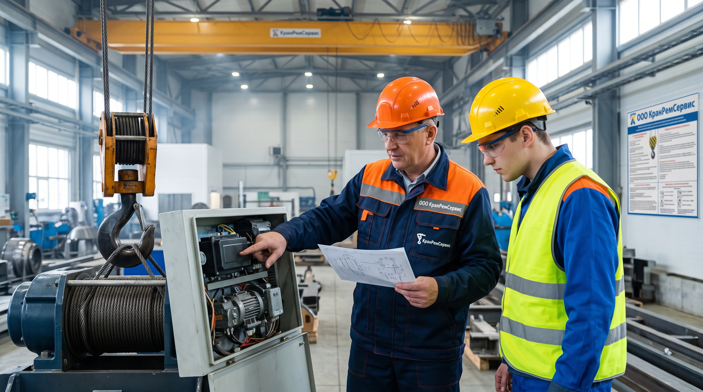

Разбор основных неисправностей грузоподъёмных кранов и порядок действий.

Кран перестал поднимать груз — ситуация неприятная, но не всегда критичная. В большинстве случаев причина кроется в одной из пяти типовых неисправностей, которые можно диагностировать без полной разборки крана. Главное — действовать по порядку: от простого к сложному, не пропуская проверки.
В этой статье разберём пять основных причин, почему кран не поднимает груз, и что нужно делать в каждом случае.
Как проявляется: Кран работал нормально, но при попытке поднять очередной груз механизм подъёма останавливается, хотя двигатель гудит.
Почему так происходит: Современные краны оснащены ограничителем грузоподъёмности (ОГП) — прибором безопасности, который автоматически отключает механизм подъёма, если масса груза превышает допустимую для данного вылета. Это не поломка, а защитная реакция.
Что делать:
Важно: Не пытайтесь отключить ограничитель грузоподъёмности или заблокировать его. Это грубейшее нарушение правил промышленной безопасности и прямая угроза жизни людей.
Как проявляется: Кран поднимает груз, но он самопроизвольно опускается. Или груз не удерживается на весу, и тормоз не срабатывает.
Почему так происходит: Тормоз механизма подъёма — это нормально закрытый тормоз, который автоматически размыкается при включении привода и замыкается при отключении. Если он изношен, загрязнён или неправильно отрегулирован, груз не удерживается.
Что делать:
Важно: Эксплуатация крана с неисправным тормозом механизма подъёма запрещена. Это одна из самых опасных неисправностей.
Как проявляется: Кран не поднимает груз, двигатель работает, но крюк не движется. Или крюк движется рывками.
Почему так происходит: Грузовой канат — это расходный элемент, который со временем изнашивается. Обрывы проволок, коррозия, деформации — всё это снижает прочность каната. При достижении браковочных показателей канат подлежит замене.
Что делать:
Важно: Браковка канатов проводится в соответствии с нормами, указанными в руководстве по эксплуатации крана и в приложении 16 к Правилам.
Как проявляется: Кран не поднимает груз, двигатель не запускается или работает с перебоями. Или слышны посторонние шумы, гудение, щелчки.
Почему так происходит: Электродвигатель механизма подъёма может выйти из строя по разным причинам: обрыв фазы, межвитковое замыкание, износ подшипников, перегрев. Также возможны неисправности в системе управления: контакторы, пускатели, частотные преобразователи, кабели.
Что делать:
Важно: Ремонт электрооборудования крана должен выполнять аттестованный персонал с соответствующей группой по электробезопасности.
Как проявляется: Кран не поднимает груз, двигатель работает, но механизм не передаёт усилие. Или слышны посторонние шумы, скрежет, стуки в редукторе.
Почему так происходит: Редуктор механизма подъёма передаёт крутящий момент от двигателя к барабану. Со временем зубья шестерён изнашиваются, подшипники выходят из строя, смазка теряет свои свойства. Всё это приводит к тому, что редуктор не может передать необходимое усилие.
Что делать:
Важно: Ремонт редуктора — это сложная операция, требующая специального оборудования и квалификации. Лучше доверить её специализированной организации.
Кран не поднимает груз — это всегда сигнал о том, что требуется диагностика. В большинстве случаев причина кроется в одной из пяти описанных неисправностей. Главное — не пытаться решить проблему «на глазок» и не отключать приборы безопасности. Правильный порядок действий: остановка, диагностика, устранение неисправности, проверка работоспособности.
Если вы не уверены в своих силах — обратитесь к специалистам. Ремонт грузоподъёмных кранов — это не та область, где можно экономить на безопасности.
Заполните форму — мы свяжемся с вами, уточним детали и рассчитаем стоимость работ. Ответим в течение 1 рабочего дня.